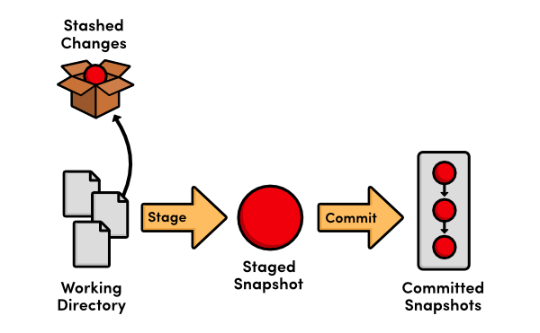
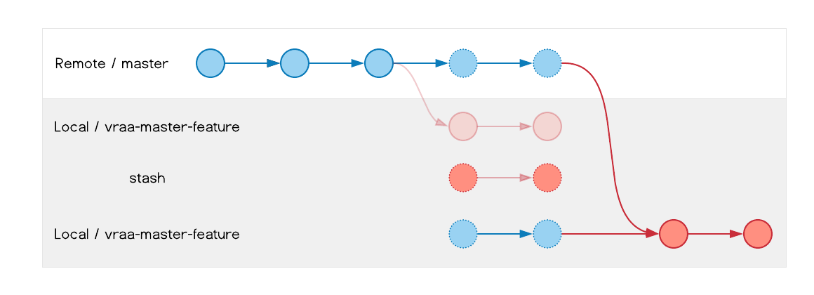

Capítulo 7 Git Stash
En este capítulo, conoceremos y emplearemos el Stash, una funcion para rastrear cambios sin alterar los registros del repositorio, es decir, sin la necesidad de un commit.
Stash: El Stash en Git es una funcionalidad que guarda temporalmente cambios no confirmados en el área de trabajo para permitir trabajar en otra cosa sin perder el progreso actual.
Podemos considerar al Stash como una bóveda en la que guardamos los cambios realizados desde el último commit, o en el que se encuentre el HEAD, para no perderlos en caso de que se requiera trabajar en otra ubicación del repositorio, o en otro commit, esto sin la necesidad de hacer una confirmación de esos cambios. De manera que podamos recuperar ese trabajo no confirmado para continuar el trabajo donde hbía quedado.

Es importante no abusar del Stash ya que, aunque se puede etiquetar la informacion almacenada allí, es muy fácil olvidar que cambios le corresponden a cada ubicación sobre la que se está trabajando. Lo más recomendable es apoyarse en el uso de las ramas y, en caso de requerir el uso del Stash, recuperar esos cambios almacenados lo antes posible y continuar con el trabajo donde se dejó, en lugar de mantenerlo pendiente.

Imagina que Tony Stark está mejorando su armadura en su taller, pero de repente recibe una alerta de SHIELD porque Thanos está atacando. No puede seguir trabajando en su traje en ese momento, pero tampoco quiere perder sus avances, así que guarda todas sus modificaciones en un compartimento seguro de su laboratorio para retomarlas más tarde.
En Git, el stash funciona igual: si estás trabajando en cambios pero necesitas cambiar de rama o atender otra tarea sin perder tu progreso, puedes “guardarlos” temporalmente con git stash y recuperarlos después con git stash pop o git stash apply.
7.1 El Stash
Supongamos que Iron Man, Thor, Hulk y Black Widow terminan sus misiones de alta prioridad, por lo que estas se remueven de sus respectivos registros:
- Iron Man
# Misiones de Iron Man
1. **Desarrollar el Mark XLVII**
- Descripción: Implementar mejoras en el sistema de vuelo y armas del nuevo traje.
- Prioridad: Media
- Fecha límite: 2025-02-15- Thor
# Misiones de Thor
1. **Negociar una alianza con los Elfos Oscuros**
- Descripción: Organizar un tratado de paz para evitar conflictos en los Nueve Reinos.
- Prioridad: Media
- Fecha límite: 2025-03-01- Hulk
# Misiones de Hulk
1. **Probar nuevos métodos de control**
- Descripción: Colaborar con Bruce Banner para mejorar la técnica de meditación bajo estrés.
- Prioridad: Media
- Fecha límite: 2025-02-05- Black Widow
# Misiones de Black Widow
1. **Entrenar a nuevos reclutas de SHIELD**
- Descripción: Liderar sesiones avanzadas de combate y estrategias de infiltración.
- Prioridad: Media
- Fecha límite: 2025-02-15[main e4c626a] cumplimiento misiones alta prioridad: Iron Man, Thor, Hulk, Black Widow
4 files changed, 4 insertions(+), 49 deletions(-)Se consideran nuevas misiones para asignar a estos héroes, estas deben agregarse a sus registros:
- Iron Man
# Misiones de Iron Man
1. **Desarrollar el Mark XLVII**
- Descripción: Implementar mejoras en el sistema de vuelo y armas del nuevo traje.
- Prioridad: Media
- Fecha límite: 2025-02-15
2. **Desactivar un satélite fuera de control**
- Descripción: Un satélite experimental de Stark Industries ha sido hackeado y está a punto de impactar contra una ciudad. Debe ser desactivado antes de que cause una catástrofe.
- Prioridad: Alta
- Fecha límite: 2025-03-15
3. **Recuperar una armadura robada**
- Descripción: Un prototipo del traje Mark L ha sido robado y modificado con tecnología avanzada. Se debe recuperar antes de que caiga en las manos equivocadas.
- Prioridad: Alta
- Fecha límite: 2025-02-28- Thor
# Misiones de Thor
1. **Negociar una alianza con los Elfos Oscuros**
- Descripción: Organizar un tratado de paz para evitar conflictos en los Nueve Reinos.
- Prioridad: Media
- Fecha límite: 2025-03-01
2. **Defender el Bifrost de un ataque enemigo**
- Descripción: Un ejército de Jotuns ha intentado invadir Asgard usando el Bifrost. Es necesario repeler la invasión y sellar el portal.
- Prioridad: Alta
- Fecha límite: 2025-02-20
3. **Capturar a Loki antes de su próximo golpe**
- Descripción: Loki ha escapado de Asgard y planea sembrar el caos en la Tierra. Se debe localizar y capturarlo antes de que su plan se complete.
- Prioridad: Alta
- Fecha límite: 2025-03-05- Hulk
# Misiones de Hulk
1. **Probar nuevos métodos de control**
- Descripción: Colaborar con Bruce Banner para mejorar la técnica de meditación bajo estrés.
- Prioridad: Media
- Fecha límite: 2025-02-05
2. **Detener a un Hulk Rojo descontrolado**
- Descripción: Un experimento fallido ha causado que un nuevo Hulk Rojo entre en frenesí. Se debe detener antes de que destruya una ciudad entera.
- Prioridad: Alta
- Fecha límite: 2025-02-25
3. **Evitar la activación de un ejército de Hulks sintéticos**
- Descripción: Un grupo de científicos ha clonado células Gamma para crear supersoldados. Se debe destruir la instalación y detener el proyecto.
- Prioridad: Alta
- Fecha límite: 2025-03-08- Black Widow
# Misiones de Black Widow
1. **Entrenar a nuevos reclutas de SHIELD**
- Descripción: Liderar sesiones avanzadas de combate y estrategias de infiltración.
- Prioridad: Media
- Fecha límite: 2025-02-15
2. **Interceptar un cargamento de armas biológicas**
- Descripción: Un grupo terrorista ha conseguido armas biológicas de última generación. Se debe interceptar el cargamento antes de que sea distribuido.
- Prioridad: Alta
- Fecha límite: 2025-02-22
3. **Eliminar una célula de la Mano en Nueva York**
- Descripción: Se ha detectado actividad de la organización secreta La Mano en Nueva York. Se debe infiltrar su base y desmantelar sus operaciones.
- Prioridad: Alta
- Fecha límite: 2025-03-10Pero antes de completar la asignación de las nuevas misiones llega el Capitán América para registrarse:
- Primero guardamos las asignaciones en el
stashpara no perder esa información.
Directorio de trabajo y estado de índice WIP on main: e4c626a cumplimiento misiones alta prioridad: Iron Man, Thor, Hulk, Black Widow guardadosPuedes notar que al ver el estado del repositorio, git no muestra cambios en los archivos.
- Hacemos el registro del Capitán América.
descripciones.md
## Capitán América
- **Nombre real:** Steve Rogers
- **Descripción:** Un supersoldado con habilidades físicas mejoradas, líder nato y defensor de la justicia.origenes.md
## Capitán América
- Fue seleccionado para el Proyecto Súper Soldado durante la Segunda Guerra Mundial y recibió el Suero del Supersoldado.
- Tras liderar varias misiones contra HYDRA, quedó congelado en el hielo por décadas hasta ser encontrado por SHIELD.debilidades.md
## Capitán América
- A pesar de su fuerza mejorada, sigue siendo humano y vulnerable a heridas graves.
- Su código moral a veces interfiere con decisiones estratégicas difíciles.misiones/capitan_america.md
# Misiones de Capitán América
1. **Supervisar el entrenamiento de nuevos Vengadores**
- Descripción: Dirigir ejercicios tácticos y sesiones de combate para nuevos reclutas.
- Prioridad: Media
- Fecha límite: 2025-02-10
2. **Recuperar el Escudo original**
- Descripción: Investigar la ubicación del escudo original, extraviado tras la batalla contra Thanos.
- Prioridad: Alta
- Fecha límite: 2025-01-28
3. **Desmantelar células de HYDRA en Sudamérica**
- Descripción: Operación encubierta para identificar y neutralizar bases secretas de HYDRA.
- Prioridad: Alta
- Fecha límite: 2025-02-15README.md
- guardamos el registro del Capitán América
[main 5319e68] se une Capitan America
5 files changed, 34 insertions(+)
create mode 100644 misiones/capitan_america.md- para poder continuar con la asignación de nuevas misiones, tenemos que recuperarlas del
stash. Para ello, antes que otra cosa, debemos listar todo lo que se haya guardado en elstash.
stash@{0}: WIP on main: e4c626a cumplimiento misiones alta prioridad: Iron Man, Thor, Hulk, Black WidowEste mensaje contiene bastante información:
stash@{0}indica el lugar, en jerarquía, del trabajo, en este caso es0.WIPWork In Progres.on mainindica la rama en la que se encuentra el trabajomain.e4c626a cumplimiento misiones alta prioridad: Iron Man, Thor, Hulk, Black Widowindica el registro sobre el que se estaba trabajando.
Para recuperar nuestro trabajo pendiente, la asignación de nuevas misiones, empleamos el siguiente comando.
En la rama main
Cambios no rastreados para el commit:
(usa "git add <archivo>..." para actualizar lo que será confirmado)
(usa "git restore <archivo>..." para descartar los cambios en el directorio de trabajo)
modificados: misiones/black_widow.md
modificados: misiones/hulk.md
modificados: misiones/iron_man.md
modificados: misiones/thor.md
sin cambios agregados al commit (usa "git add" y/o "git commit -a")
Descartado stash@{0} (f24e0582315c5541a0d8fddc35862e34e1242e15)Con stash@\{0\} indicamos cual es el trabajo que queremos recuperar, en este caso era el 0; para este particular caso, también podemos emplear git stash pop ya que por defecto devuelve el trabajo en la posicion 0 y el resto los sube un lugar.
Comprovamos el estado del repositorio.
Tenemos el trabajo pendiente de vuelta, por lo que podemos seguir trabajando en la asignación de misiones nuevas.
7.2 Conflictos en el Stash
- Antes de confirmar la asignación de las nuevas misiones, Visión llega para registrarse por lo que, de nuevo, guardamos el progreso en el
stash.
- Hacemos el registro de Visión.
descripciones.md
## Visión
- **Nombre real:** Visión
- **Descripción:** Sintético avanzado creado con la Gema de la Mente y el cuerpo diseñado por Ultron. Posee inteligencia artificial altamente evolucionada y habilidades de manipulación de densidad.origenes.md
## Visión
- Fue creado por Ultron con el propósito de ser su cuerpo definitivo, pero obtuvo libre albedrío gracias a la intervención de Tony Stark, Bruce Banner y Thor.
- La Gema de la Mente le otorga habilidades extraordinarias, incluyendo vuelo, manipulación de densidad y un intelecto superior.debilidades.md
## Visión
- Su conexión con la Gema de la Mente lo hace vulnerable si esta es removida o dañada.
- Puede ser afectado por ataques de manipulación de sistemas o tecnología avanzada.misiones/vision.md
# Misiones de Visión
1. **Analizar anomalías en la Gema de la Mente**
- **Descripción:** Examinar irregularidades en la Gema de la Mente para prevenir inestabilidades.
- **Prioridad:** Alta
- **Fecha límite:** 2025-02-05
2. **Actualizar protocolos de defensa en la Torre de los Vengadores**
- **Descripción:** Optimizar los sistemas de seguridad y detección de amenazas.
- **Prioridad:** Media
- **Fecha límite:** 2025-02-15
3. **Proteger a Wanda Maximoff de amenazas externas**
- **Descripción:** Vigilar e intervenir en caso de ataques dirigidos contra Scarlet Witch.
- **Prioridad:** Alta
- **Fecha límite:** 2025-01-30 README.md
- guardamos el registro de Visión
[main 8531ef2] se une Vision
5 files changed, 34 insertions(+)
create mode 100644 misiones/vision.md- Mientras se registraba a Visión, llegó una misión de extrema urgencia, la cual tomó Iron Man, por lo que se agrega a su registro de misiones como una nueva asignación.
misiones/iron_man.md
# Misiones de Iron Man
1. **Desarrollar el Mark XLVII**
- Descripción: Implementar mejoras en el sistema de vuelo y armas del nuevo traje.
- Prioridad: Media
- Fecha límite: 2025-02-15
2. **Proteger a un testigo clave en un juicio internacional**
- Descripción: Vigilar y garantizar la seguridad de un testigo protegido que posee información vital sobre una red de espionaje criminal.
- Prioridad: Alta
- Fecha límite: 2025-02-12- Se registra la nueva asignación.
- Se retoma la asignación de nuevas misiones.
Auto-fusionando misiones/iron_man.md
CONFLICTO (contenido): Conflicto de fusión en misiones/iron_man.md
En la rama main
Cambios a ser confirmados:
(usa "git restore --staged <archivo>..." para sacar del área de stage)
modificados: misiones/black_widow.md
modificados: misiones/hulk.md
modificados: misiones/thor.md
Rutas no fusionadas:
(usa "git restore --staged <archivo>..." para sacar del área de stage)
(usa "git add <archivo>..." para marcar una resolución)
modificados por ambos: misiones/iron_man.md
La entrada de stash se guardó en caso de ser necesario nuevamente.Nos hemos encontrado con un conflicto en las misiones de Iron Man.
Comprobamos el estado del repositorio.
Git reconoce las modificaciones en las misiones de Thor, Hulk y Black Widow; el marcador UU indica que se realizaron cambios desde ambos lados del stash
- Resolvemos los conflictos encontrados.
misiones/iron_man.md
# Misiones de Iron Man
1. **Desarrollar el Mark XLVII**
- Descripción: Implementar mejoras en el sistema de vuelo y armas del nuevo traje.
- Prioridad: Media
- Fecha límite: 2025-02-15
<<<<<<< Updated upstream
2. **Proteger a un testigo clave en un juicio internacional**
- Descripción: Vigilar y garantizar la seguridad de un testigo protegido que posee información vital sobre una red de espionaje criminal.
- Prioridad: Alta
- Fecha límite: 2025-03-12
=======
2. **Desactivar un satélite fuera de control**
- Descripción: Un satélite experimental de Stark Industries ha sido hackeado y está a punto de impactar contra una ciudad. Debe ser desactivado antes de que cause una catástrofe.
- Prioridad: Alta
- Fecha límite: 2025-03-15
3. **Recuperar una armadura robada**
- Descripción: Un prototipo del traje Mark L ha sido robado y modificado con tecnología avanzada. Se debe recuperar antes de que caiga en las manos equivocadas.
- Prioridad: Alta
- Fecha límite: 2025-02-28
>>>>>>> Stashed changesSimilarmente a los conflictos al mezclar ramas:
La marca
<<<<<<< Updated upstreamindica el trabajo registrado desde el commit del que se guardó el trabajo en elstash.La marca
=======separa los trabajos del registro y delstash.La marca
>>>>>>> Stashed changesindica el trabajo almacenado en elstash.
En resumen lo que se encuentra entre <<<<<<< Updated upstream y ======= es el trabajo registrado desde el commit en el que se almacenó el trabajo al stash; entre ======= y >>>>>>> tierra-65 se encuentra el trabajo almacenado en el stash.
- En este caso se mantendrán todas las misiones, solo se cambiará el número de misión.
misiones/iron_man.md
# Misiones de Iron Man
1. **Desarrollar el Mark XLVII**
- Descripción: Implementar mejoras en el sistema de vuelo y armas del nuevo traje.
- Prioridad: Media
- Fecha límite: 2025-02-15
2. **Proteger a un testigo clave en un juicio internacional**
- Descripción: Vigilar y garantizar la seguridad de un testigo protegido que posee información vital sobre una red de espionaje criminal.
- Prioridad: Alta
- Fecha límite: 2025-03-12
3. **Desactivar un satélite fuera de control**
- Descripción: Un satélite experimental de Stark Industries ha sido hackeado y está a punto de impactar contra una ciudad. Debe ser desactivado antes de que cause una catástrofe.
- Prioridad: Alta
- Fecha límite: 2025-03-15
4. **Recuperar una armadura robada**
- Descripción: Un prototipo del traje Mark L ha sido robado y modificado con tecnología avanzada. Se debe recuperar antes de que caiga en las manos equivocadas.
- Prioridad: Alta
- Fecha límite: 2025-02-28- Registramos la asignación de nuevas misiones.
7.3 Stash avanzado
En esta sección veremos más opciones que nos ofrece git al usar el stash.
Aún después de reslover los conflictos del stash, el trabajo se mantiene almacenado en el mismo, podemos comprobarlo de distintas maneras.
Aquí git nos muestra que tenemos trabajo almacenado en el stash; otra manera es:
* 1db9966 - (hace 10 horas) nuevas misiones asignadas: Iron Man, Thor, Hulk, Black Widow - Byron Ornelas (HEAD -> main)
* b307d16 - (hace 11 horas) asignacion de emergencia para Iron Man - Byron Ornelas
* 8531ef2 - (hace 11 horas) se une Vision - Byron Ornelas
| * b63a2df - (hace 11 horas) WIP on main: 5319e68 se une Capitan America - Byron Ornelas (refs/stash)
|/|
| * 25aa2fa - (hace 11 horas) index on main: 5319e68 se une Capitan America - Byron Ornelas
|/
* 5319e68 - (hace 12 horas) se une Capitan America - Byron Ornelas
* e4c626a - (hace 13 horas) cumplimiento misiones alta prioridad: Iron Man, Thor, Hulk, Black Widow - Byron Ornelas
* 7e666cc - (hace 14 horas) incorporacion de Nova y Spider-Gwen (T-65) al registro principal - Byron Ornelas (tag: v-1.0.0)
|\
| * edf50e5 - (hace 2 semanas) se unen Spider-Gwen y Nova del Tierra-65 - Byron Ornelas
* | 5ae8eb6 - (hace 15 horas) se une Scarlet Witch - Byron Ornelas
* | 815d1e1 - (hace 2 semanas) se retiran los heroes de Tierra-99999 - Byron Ornelas (tag: v-0.1.0)
|/
* 5f7eb20 - (hace 2 semanas) incorporacion de Black Panther (T-7642) al equipo principal - Byron Ornelas
|\
| * 347dd3f - (hace 2 semanas) se une Black Panther de Tierra-7642; registro completo - Byron Ornelas
* | bd81998 - (hace 2 semanas) se le asignan nuevas misiones a Spider-Man - Byron Ornelas
|/
* f5907d1 - (hace 2 semanas) se une Scarlet Witch de Tierra-99999; se termina el registro de T-99999 - Byron Ornelas
* 6976c5a - (hace 2 semanas) se unen Captain marvel y Doctor Doom de Tierra-99999 - Byron Ornelas
* c20b80d - (hace 2 semanas) .gitignore actualizado (extension .log) - Byron Ornelas
* 2ed8cf4 - (hace 2 semanas) .gitignore agregado - Byron Ornelas
* c9ffd15 - (hace 2 semanas) sin saignaciones para Spider-Man - Byron Ornelas
* e31eae6 - (hace 2 semanas) misiones de Spider-Man completadas - Byron Ornelas
* 0059540 - (hace 2 semanas) contactos.md eliminado - Byron Ornelas
* 2d05f6e - (hace 2 semanas) contactos.md renombrado - Byron Ornelas
* 1c7fe32 - (hace 2 semanas) contactos de emergencia agregados - Byron Ornelas
* 8727c32 - (hace 2 semanas) se unen Doctor Strange y Daredevil - Byron Ornelas
* a2427e8 - (hace 2 semanas) misiones/ agregado -> misiones de los heroes: iron man, thor, hulk, black widow y spider man. - Byron Ornelas
* 43b3a69 - (hace 2 semanas) debilidades.md agregado - Byron Ornelas
* c691147 - (hace 2 semanas) origenes.md agregado - Byron Ornelas
* ec89c02 - (hace 2 semanas) descripciones.md agregado - Byron Ornelas
* ac02fe0 - (hace 2 semanas) README.md agregado - Byron Ornelas% Podemos ver en la línea | * b63a2df - (hace 11 horas) WIP on main: 5319e68 se une Capitan America - Byron Ornelas (refs/stash) que se mantiene el registro del trabajo almacenado en el stash.
Para eliminar todos los trabajos pendientes almacenados en el stash.
Esto, borra todo lo que git había movido al stash, pero aun podemos recuperar el material perdido, así como los commits que recuperamos anteriormente con el comando git reflog.
Spider-Man, termina con todas sus misiones y se encuentra en espera de nuevas asignaciones, por lo que limpiamos su registro y le asignamos misiones nuevas:
misiones/spider_man.md
[main 8051202] Spider-Man termina sus misiones, en espera de nuevas asignaciones
1 file changed, 18 deletions(-)Ahora, se le asignan nuevas misiones:
misiones/spider_man.md
# Misiones de Spider-Man
1. **Detener un atraco al Banco Central de Nueva York**
- Descripción: Un grupo de criminales con tecnología avanzada ha irrumpido en el Banco Central. Deben ser detenidos antes de que escapen.
- Prioridad: Alta
- Fecha límite: 2025-02-18
2. **Investigar una nueva droga en las calles**
- Descripción: Una nueva sustancia está otorgando habilidades temporales a criminales. Se debe rastrear su origen y eliminar su producción.
- Prioridad: Alta
- Fecha límite: 2025-02-22
3. **Rescatar rehenes en un ferry secuestrado**
- Descripción: Un grupo de mercenarios ha tomado el control de un ferry con civiles. La situación debe resolverse sin bajas.
- Prioridad: Alta
- Fecha límite: 2025-02-25Ocurre un problema en la base central y no se puede proceder con la asignación de estas misiones por el momento, estas se envían al stash.
Directorio de trabajo y estado de índice WIP on main: 8051202 Spider-Man termina sus misiones, en espera de nuevas asignaciones guardadosEsto ocurre un par de veces más el mismo día con las misiones:
# Misiones de Spider-Man
1. **Neutralizar un grupo de asaltantes con equipo de Hammer Industries**
- Descripción: Unos criminales han conseguido armas avanzadas de Hammer Industries. Se deben desactivar y recuperar.
- Prioridad: Alta
- Fecha límite: 2025-03-01
2. **Capturar a un imitador de Spider-Man**
- Descripción: Un criminal ha robado un traje de Spider-Man y está cometiendo delitos en su nombre. Debe ser detenido antes de que dañe su reputación.
- Prioridad: Alta
- Fecha límite: 2025-03-05
3. **Proteger a Mary Jane de un intento de secuestro**
- Descripción: Un grupo criminal ha puesto a Mary Jane como objetivo. Se debe garantizar su seguridad.
- Prioridad: Alta
- Fecha límite: 2025-03-08Directorio de trabajo y estado de índice WIP on main: 8051202 Spider-Man termina sus misiones, en espera de nuevas asignaciones guardadosy también con:
# Misiones de Spider-Man
1. **Detener a Rhino antes de que destruya un centro comercial**
- Descripción: Rhino está causando estragos en un centro comercial. Debe ser neutralizado antes de que haya víctimas.
- Prioridad: Alta
- Fecha límite: 2025-03-12
2. **Evitar el colapso de un edificio en Queens**
- Descripción: Un edificio ha sido dañado por una explosión. Se debe evitar su colapso y rescatar a los atrapados.
- Prioridad: Alta
- Fecha límite: 2025-03-15
3. **Rastrear y capturar a Black Cat**
- Descripción: Black Cat ha robado un artefacto valioso. Se debe encontrar y recuperar el objeto sin causar daños colaterales.
- Prioridad: Alta
- Fecha límite: 2025-03-18Directorio de trabajo y estado de índice WIP on main: 8051202 Spider-Man termina sus misiones, en espera de nuevas asignaciones guardadosSe intenta una última vez asignarle misiones a Spider-Man.
misiones/spider_man.md
# Misiones de Spider-Man
1. **Detener un atraco al Banco Central de Nueva York**
- Descripción: Un grupo de criminales con tecnología avanzada ha irrumpido en el Banco Central. Deben ser detenidos antes de que escapen.
- Prioridad: Alta
- Fecha límite: 2025-02-18
2. **Investigar una nueva droga en las calles**
- Descripción: Una nueva sustancia está otorgando habilidades temporales a criminales. Se debe rastrear su origen y eliminar su producción.
- Prioridad: Alta
- Fecha límite: 2025-02-22
3. **Rescatar rehenes en un ferry secuestrado**
- Descripción: Un grupo de mercenarios ha tomado el control de un ferry con civiles. La situación debe resolverse sin bajas.
- Prioridad: Alta
- Fecha límite: 2025-02-25Directorio de trabajo y estado de índice WIP on main: 8051202 Spider-Man termina sus misiones, en espera de nuevas asignaciones guardadosTras estabilizarse la base, se revisa el material almacenado en el stash.
stash@{0}: WIP on main: 8051202 Spider-Man termina sus misiones, en espera de nuevas asignaciones
stash@{1}: WIP on main: 8051202 Spider-Man termina sus misiones, en espera de nuevas asignaciones
stash@{2}: WIP on main: 8051202 Spider-Man termina sus misiones, en espera de nuevas asignacionesPara poder recuperar la primer versión,
En la rama main
Cambios no rastreados para el commit:
(usa "git add <archivo>..." para actualizar lo que será confirmado)
(usa "git restore <archivo>..." para descartar los cambios en el directorio de trabajo)
modificados: misiones/spider_man.md
sin cambios agregados al commit (usa "git add" y/o "git commit -a")Directorio de trabajo y estado de índice WIP on main: 8051202 Spider-Man termina sus misiones, en espera de nuevas asignaciones guardadosveamos como quedó el stash
stash@{0}: WIP on main: 8051202 Spider-Man termina sus misiones, en espera de nuevas asignaciones
stash@{1}: WIP on main: 8051202 Spider-Man termina sus misiones, en espera de nuevas asignaciones
stash@{2}: WIP on main: 8051202 Spider-Man termina sus misiones, en espera de nuevas asignaciones
stash@{3}: WIP on main: 8051202 Spider-Man termina sus misiones, en espera de nuevas asignacionesSabemos que el 0 y el 3 tienen la misma información, si queremos deshacernos del registro 0:
Al volver a listar los stash
stash@{0}: WIP on main: 8051202 Spider-Man termina sus misiones, en espera de nuevas asignaciones
stash@{1}: WIP on main: 8051202 Spider-Man termina sus misiones, en espera de nuevas asignaciones
stash@{2}: WIP on main: 8051202 Spider-Man termina sus misiones, en espera de nuevas asignacionesSi queremos obtener mas información sobre un stash como el 1, podemos emplear
No brinda tanta información como podríamos desear, por lo que es mas recomendable distinguir los stashes con mensajes como Misiones Spider-Man 1 que permitan identificar el contenido del stash
En la rama main
Cambios no rastreados para el commit:
(usa "git add <archivo>..." para actualizar lo que será confirmado)
(usa "git restore <archivo>..." para descartar los cambios en el directorio de trabajo)
modificados: misiones/spider_man.md
sin cambios agregados al commit (usa "git add" y/o "git commit -a")
Descartado stash@{2} (21b84744155d8a933aacf07a2398dd8722524492)Personalizando el stash con un mensaje:
Listando los stash, de nuevo.
stash@{0}: On main: Misiones Spider-Man 1
stash@{1}: WIP on main: 8051202 Spider-Man termina sus misiones, en espera de nuevas asignaciones
stash@{2}: WIP on main: 8051202 Spider-Man termina sus misiones, en espera de nuevas asignacionesSi deseamos ver aún más información de lo que hay almacenado en cada stash, podemos utilizar:
stash@{0}: On main: Misiones Spider-Man 1
misiones/spider_man.md | 17 +++++++++++++++++
1 file changed, 17 insertions(+)
stash@{1}: WIP on main: 8051202 Spider-Man termina sus misiones, en espera de nuevas asignaciones
misiones/spider_man.md | 17 +++++++++++++++++
1 file changed, 17 insertions(+)
stash@{2}: WIP on main: 8051202 Spider-Man termina sus misiones, en espera de nuevas asignaciones
misiones/spider_man.md | 17 +++++++++++++++++
1 file changed, 17 insertions(+)Esta salida nos muestra algo mas de información de cada stash que hemos almacenado. Con pop podemos recuperar el ultimo stash y, a la vez, borrarlo del registro.
En la rama main
Cambios no rastreados para el commit:
(usa "git add <archivo>..." para actualizar lo que será confirmado)
(usa "git restore <archivo>..." para descartar los cambios en el directorio de trabajo)
modificados: misiones/spider_man.md
sin cambios agregados al commit (usa "git add" y/o "git commit -a")
Descartado refs/stash@{0} (e983b5d2df7790936bb5cbe79d73be35fe01e204)Verificando:
stash@{0}: WIP on main: 8051202 Spider-Man termina sus misiones, en espera de nuevas asignaciones
stash@{1}: WIP on main: 8051202 Spider-Man termina sus misiones, en espera de nuevas asignacionesPor último, si queremos borrar todos los stash, podemos emplear:
Para eliminar todos los stash que no usaremos.